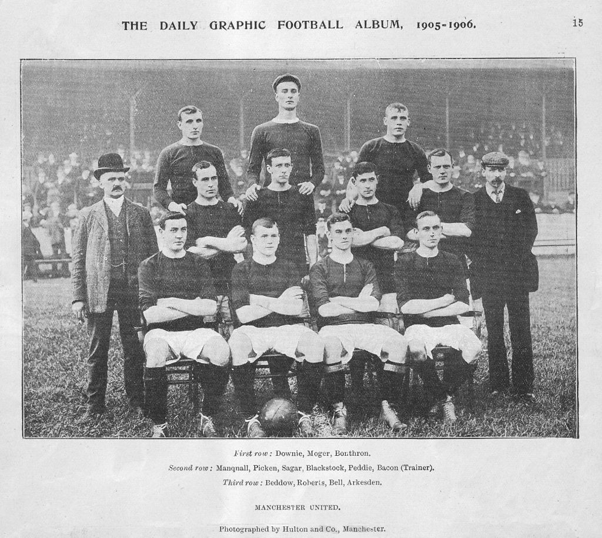

History
Early years (1878–1945)
Main article: History of Manchester United F.C. (1878–1945)
Manchester United was formed in 1878 as Newton Heath LYR Football Club by the Carriage and Wagon department of the Lancashire and Yorkshire Railway (LYR) depot at Newton Heath. The team initially played games against other departments and railway companies, but on 20 November 1880, they competed in their first recorded match; wearing the colours of the railway company – green and gold – they were defeated 6–0 by Bolton Wanderers' reserve team. By 1888, the club had become a founding member of The Combination, a regional football league. Following the league's dissolution after only one season, Newton Heath joined the newly formed Football Alliance, which ran for three seasons before being merged with The Football League. This resulted in the club starting the 1892–93 season in the First Division, by which time it had become independent of the railway company and dropped the "LYR" from its name. After two seasons, the club was relegated to the Second Division.

In January 1902, with debts of £2,670 – equivalent to £310,000 in 2022 – the club was served with a winding-up order. Captain Harry Stafford found four local businessmen, including John Henry Davies (who became club president), each willing to invest £500 in return for a direct interest in running the club and who subsequently changed the name; on 24 April 1902, Manchester United was officially born. Under Ernest Mangnall, who assumed managerial duties in 1903, the team finished as Second Division runners-up in 1906 and secured promotion to the First Division, which they won in 1908 – the club's first league title. The following season began with victory in the first ever Charity Shield and ended with the club's first FA Cup title. Manchester United won the First Division for the second time in 1911, but at the end of the following season, Mangnall left the club to join Manchester City.